Power steering link assessed (4WD) installation |
| 1. Power steering link assertion |
Temporary steering link assigned to cross member.
With four bolts, the cross member is tentatively attached to the body.
Insert the SST into the criteria of the cross member RH side and the vehicle RH side, and temporarily tighten the bolt while adjusting the bolt hole position.
The SST is inserted into the cross member LH side and the vehicle LH side, and the two bolts are temporarily tightened while adjusting the bolt hole position.
The SST is inserted into the cross member RH side and the vehicle RH side and tightened with a specified torque.
Insert the SST into the cross member LH side and the vehicle LH side and tighten with a specified torque.
Remove the mission jack from the cross member.
Steering link Assisted bolt is tightened.
 |
Attach reinforcement LH and RH with four bolts.
| 2. Stabilizer bar FR installation |
Insert the front stabilizer bar from the right side of the vehicle.
 |
Attach the left and right front stabilizer barbush No.1 to the outside of the Stabilizer bar identification mark.
With four bolts, the front stabilizer bar is attached to the front suspension cross member via the front stabilizer bracket No.1 LH and RH.
| 3. Installation of front stabilizer bolt |
Four front stabilizer barcussia retener No. 1, 4 front stabilizer cushions, front stabilizer barcede retainer No.2 and front stabilizer bolt.
Fix the stabilizer bolt with a spanner (10mm) and tighten with two new nuts.
Also attach the other side in the same way.
| 4. Purtive feed tube asser |
Use the Union Nut wrench 17 to attach the pressure feed tube Assem.
 |
Combine the matching mark and attach the No. 1 hose to the oil reserve ass.
| 5. Bane pump stay RR installation |
 |
Apply the claws of the Stayia as shown in the figure and attach them to the Houjin Griller.
 |
Drain the claw part of the heat insulator into the stayia hole and attach the bolt.
 |
Attach the two clamps of the oil pressure sensor harness to the stayia and the oil reserve assessy and connect the connector.
| 6. Tie rod end sub-assy LH connection |
Attach the tie rod end LH to the steering knuckle and tighten it with a castle nut.
Attach a new cottal pin.
| 7. Tie rod end sub-assy RH connection |
| 8. Installation of front tires |
| 9. Steering sliding York SUB-ASSY connection |
 |
Align the matching mark and connect the sliding yoke with bolts.
Fix the sliding yoke with two bolts.
| 10. Front tire straight condition inspection |
| 11. Steering column hole cover SUB-ASSY No.1 Installation |
| 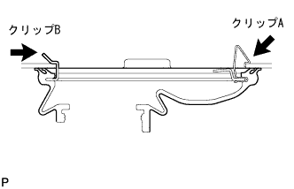 |
Attach clip A and attach the No. 1 and clip B to the body.
| 12. Steering column hole cover plate installation |
| 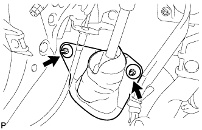 |
Attach the steering column hole cover plate with two clips.
| 13. Vane pump V belt adjustment |
 |
Attach a fan & alternator V belt.
Use a hub nut wrench or bar to press the alternator to the vehicle front side to adjust the tension of the fan & alternator V belt.
 |
Tighten the adjustment bolt A and then tighten the fixing bolt B.
| 14. V belt tension / deflection quantity inspection |
 |
Tensions and quantity inspection
| When installing a new one "M" | At the time of inspection "M" | |
|---|---|---|
| Alternative belt | 7-8. 5 | 11 -13 |
| P/S belt | 8-0 | 11 -13 |
| When installing a new one "N ｛KGF}" | At the time of inspection "N ｛KGF}" | |
|---|---|---|
| Alternative belt | 539-637 {55-65} | 245-392 {25-40} |
| P/S belt | 441-539 {45-55} | 245-343 {25-35} |
| 15. Exhaust pipe assessed |
Use caliper to measure the free length of the compression spring.
 |
The new gasket is gradually driven to the exhaust manifold using a wood piece and a hammer.
Attach the exhaust pipe ASSY FR to the exhaust manifold.
| 16. Front suspension cross member SUB-ASSY installation |
 |
Insert the SST into the suspension cross member RH side and the vehicle RH side.
| 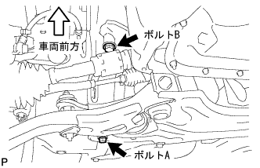 |
Temporarily tighten in the order of bolt A and b.
| 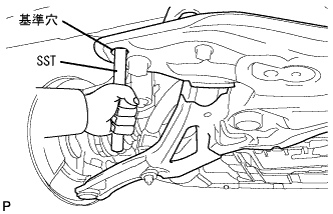 |
Insert the SST into the suspension cross member LH side and the vehicle LH side.
 |
Temporarily tighten in the order of bolt A and b.
Insert the SST into the suspension cross member RH side and the vehicle RH side and tighten with a specified torque.
Insert the SST into the suspension cross member LH side and the vehicle LH side and tighten with a specified torque.
 |
Attach the engine mounting insulator RR with two bolts and nuts.
Temporarily tighten the rower arm to the front suspension cross member with two bolts and nuts.
Attach the ball joint part of the rower arm to the steering knuckle and tighten it with a castle nut.
Attach a new cottipin.
Attach the power steering gear ASSY W/Vane pump ASSY with two bolts.
 |
With four bolts, attach the front suspension Menbarin Housing RH and LH.
| 17. Exhaust manifold Heat Insulator No.1 Installation |
 |
With four bolts, attach the exhaust manifold heat insulator No.1.
| 18. Oxygen sensor installation |
| 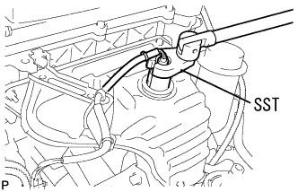 |
Use SST to attach the oxidieth sensor to the exhaust manifold.
Connect the clamp and connector.
| 19. Procellation Shaft with Center Bearing Assem |
| 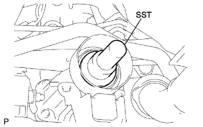 |
Remove the SST from the extension housing and insert the propeller wariz center bearing shaft ASSY.
| 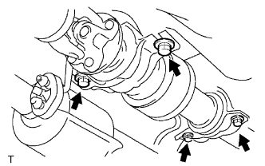 |
Temporarily tighten the interimide shaft ASSY with four bolts.
 |
Combine the combined mark of the propeller shaft asser rr and a differential flange, and attach the propellashaft Assemia RR with four bolts, washer and nuts each.
| 20. Proposhaft with Center Bearing Assem |
 |
Use a jack to lift the rear axle housing and load the suspension.
The front and rear center support bear housing are adjusted so that the end face and the rear end of the cushion are within the range of the reference value.
Confirm that the center support bearing bracket center line is at a right angle to the propeller shaft axis.
Tighten the four bolts.
| 21. Power steering fluid replenishment |
| 22. Power steering fluid air |
Lift up the vehicle.
Slowly perform the lock -lock of the steering wheels while stopping the engine.
Lift the vehicle.
Start the engine without stepping on the accelerator pedal and leave it for a few minutes.
The engine speed is 1000R/min or less, and the steering wheel lock -lock is repeated several times.
With an engine speed of 1000R/min or less, the steering wheels are kept in a delinquent hold (5-6 seconds with the steering wheels filled with a full cut) at 2-3 seconds.
After stopping the engine until the foaming and cloudiness of the oil reservoir disappears, the engine starts again and confirms that there is no foaming and cloudiness even if lock -tsu locks and stationary holding in idling rotation are performed.
Perform oil reservoir level level inspection.
| 23. Fluid quantity inspection |
Let the vehicle horizontal.
The engine speed is 1000R/min or less, repeating the lock -locking of the steering wheels to increase the fluid oil temperature.
Remove the reservoir cap from the oil reservoir.
Make sure that there is no fluid foaming and cloudiness from the oil reservoir's mouth.
Measure the difference in the fluid level between the engine rotation and the stop.If it is outside the reference value, the air should be removed.If the effect is not effective, check the fluid leakage of the hydraulic system.
 |
Inspect that the fluid level is within the standard.If it is less than the standard, replenish the power steering fluid so that the upper limit is within the standard range.
 |
Attach a reservoir cap and reservoir.
| 24. Fluid leak inspection |
Check for fluids from the location in the figure.

| 25. Exhaust leak inspection |
| 26. Tire inspection |
reference| 27. Car high inspection |
 |
Move the corner of the vehicle up and down widely, calm down the suspension, and check the vehicle height.
| Tire size | A dimension -B dimensions "M" | D Dimension-C dimensions "M" |
|---|---|---|
| 175 / 70R14 | 92 | 39 |
| 28. Side slip inspection |
Check the side slip with a side slip tester.
In the case of outside the reference value, check the wheel alignment.
| 29. Torin inspection |
Shake the vehicle and stabilize the vehicle.
Push the vehicle straight and move forward to move forward.
| 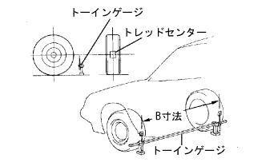 |
The guideline of the toein gauge is set on the back of the tire according to the front wheel axis center height.
The tread center is applied to the rear of each front tire, and the distance between the marks (B dimensions) is measured.
Press the vehicle slowly to move forward and rotate the front wheel 180 °.
 |
The distance between the marks (A dimension) is measured in the front of the vehicle.
Seeking to in.
| 30. Tour -in adjustment |
 |
Measure the length of the screw part of the left and right rack ends.
Remove the rack boots clip.
Loosen the tie rod end rock nut.
If the left and right differences between the rack end screws are not the standard, make adjustments.
If the measured value of the to -in is out of the out side, adjust the rack end with the shorter dimensions in the direction of extending.
If the measured value of the to -in is out of the in -side, adjust the rack end with the longer dimensions.
Check the toe -in again.
Turn the left and right rack ends in the opposite direction of each and adjust so that the to -in enters within the reference value.
Tighten the tie rod end rock nut.
 |
Use the pliers to attach the clip to the range of the figure.
| 31. Wheel cut angle inspection |
 |
Set the turning radius gauge.
Inspect the cutting angle of the wheel.
| Inside (inspection range) | Outside (reference) |
|---|---|
| 39 ° ± 2 ° | 34 ° |
| 32. Camber, casters, king pin angle inspection |
Remove the wheel cap or center ornament.
Lift up the vehicle in a flat place.
Attach a tire clamp compen seta (TCK-01).
Turn the clamp dial of the tire clamp compen seta and expand the tire clamp arm.
| 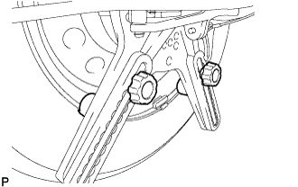 |
Turn the dial, match the two lower claws to the wheel size, apply the lower part of the wheel rim to the upper side claw according to the wheel rim.
 |
Turn the clamp dial, shrink the tire clamp arm and attach it to the tire.
Attach the removal prevention wire to the wheel air valve.
Correct the tire clamp compen seta.
| 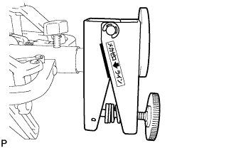 |
Turn the correction dial of the tire clamp compen seta and adjust it within the range of the Mecha Zero line (red line).
 |
Attach the camber caster king pin gauge to the mounting plate of the tire clamp compen seta and match the matching.
 |
Rotate the wheel a little, match the horizontal bubbles of the camber caster kinging pin in the center, adjust the caster bubbles to 0 ° with the adjusted screw of the camber caster kinging pin.
| 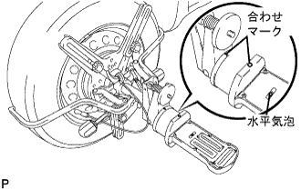 |
Rotate the wheels 180 °, match the combination of the camber caster kinging pin Gauge and the tire clamp compen seta, and adjust the horizontal bubbles.(*1)
 |
The caster bubbles in the above state are read, and the correction dial of the tire clamp compen seta is turned so that the value is 1/2 of the value.(*2)
Repeat the procedure (*1) and (*2), and even if the scale of the caster bubbles is 180 ° positively, the set of the camber caster kinging pin is completed if the wheel is 180 ° positively.
Set the turning radius gauge and drop the vehicle.
Inspect camber, casters and king pin angles.
| Camber | caster | King pin angle |
|---|---|---|
| -0 ° 40 '± 45' | 2 ° 00 '± 45' | 10 ° 15 '± 45' |
Remove the camber caster king pin gauge and tire clamp compen seta.
Attach a wheel cap or center ornament.
| 33. Camber adjustment |
Jack the vehicle and remove the front tire.
 |
Remove the bolt and separate the speed sensor and flexible hose.
 |
Loosen the two mounting nuts on the shock absorbarower side.
 |
Move the lower side of the shock absorber and adjust the camber with the rubber of the bolt and the bolt hole in the steering knuckle.
|
Tighten two nuts.
|
Attach a flexible hose and a speed sensor with bolts.
Attach the front tire.
Jack down the vehicle, shake up and down several times, and calm down the suspension.
Check the camber.
In the case of the reference value, the toe -in inspection should be performed.
In the case of outside the reference value, jack up to remove the front tire, cut the speed sensor and flexible hose separately, and perform the following work.
 |
Remove two and two bolts on the shock absorbarower side.
 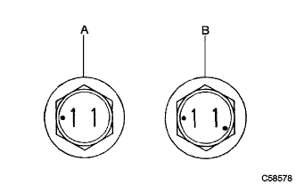 |
Select two adjusting bolts and insert them from the front of the vehicle.
| Adjasting bolt | Part number | Bolt diameter (M) | Adjustment |
|---|---|---|---|
| a | 90105-14146 | 13 | ± 15 ' |
| B | 90105-14147 | 12 | ± 30 ' |
| Camber adjustment amount | Set bolt | 90105-14146 | 90105-14147 |
|---|---|---|---|
| -1 ° 00 '--45' | 1 and 2 | ||
| -45 'ー 30' | 1 | 2 | |
| -30 'ー 15' | 1 | 2 | |
| -15 ' -0' | 1 | 2 | |
| 0' -15 ' | 1 | 2 | |
| 15'-30 ' | 1 | 2 | |
| 30 ' -45' | 1 | 2 | |
| 45'-1 ° 00 ' | 1 and 2 |
|
Attach 2 nuts.
|
Attach a flexible hose and a speed sensor with bolts.
Attach the front tire.
Jack down the vehicle, shake up and down several times, and calm the front suspension.
Check the camber again.
Inspect the toin.
Check the side slip.
| 34. Installation of engine Anda cover LH |
With two screws and two bolts, install the engine and cover LH.
| 35. Engine Anda cover RH installation |
With two screws and two bolts, install the engine and cover RH.
Tighten the nut.